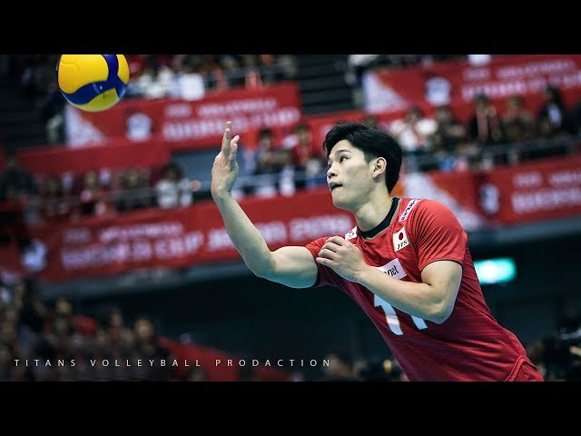
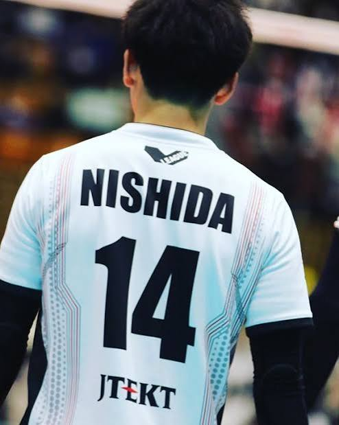
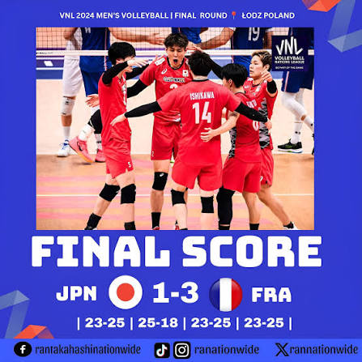

In the decisive fifth set against Canada, Nishida stepped to the service line at 9-9 and scored 6 consecutive direct service aces to win the match, creating one of the most legendary highlights in modern volleyball history.
Watch Epic Volleyball Match on YouTube (New Tab) →
At just 20 years old, Nishida carried the JTEKT Stings to their first ever V.League Division 1 championship, claiming the league's Most Valuable Player (MVP) award and highest scoring leader honors.
Explore Japan V.League Official Website (New Tab) →
Nishida helped Japan secure their highest international finish in nearly five decades, reaching the grand final and earning the 2024 VNL Silver Medal with unmatched offensive firepower.
Official Volleyball World / VNL Tournament Page (New Tab) →